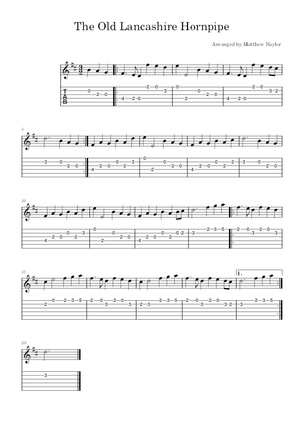
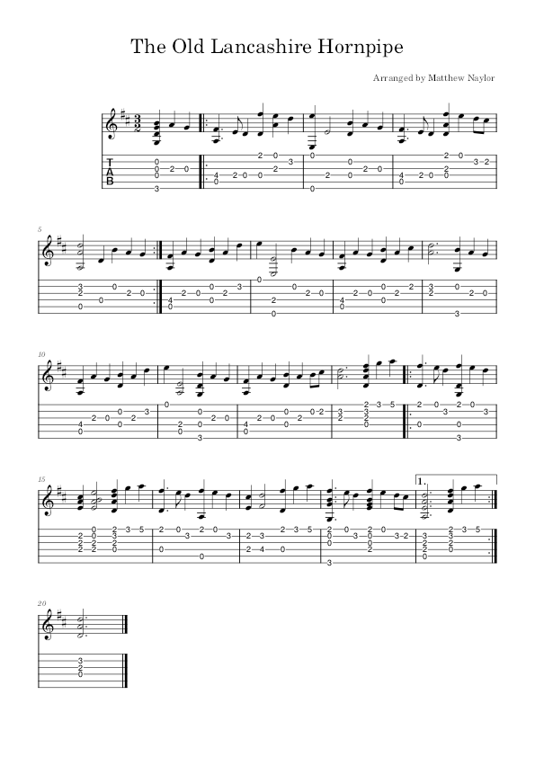

The Old Lancashire Hornpipe
A Hornpipe is traditional music that is used for dancing. Usually played with a 'swung' feel if in 4/4 but not usually in 3/2.
The Old Lancashire Hornpipe
The particular version of the tune tab-ed below is in 3/2 time signature and in D Major.
The tabbed melody 
My arragement 
Audio example of my arragement (with some variation)
References
A collection of versions at The Session
EFDSS 3/2 Hornpipes Guide
Wikipedia: Hornpipe
Accordian video example